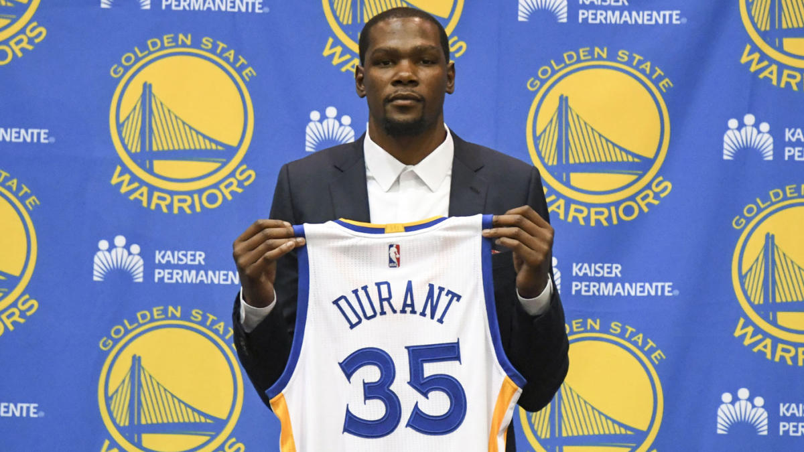
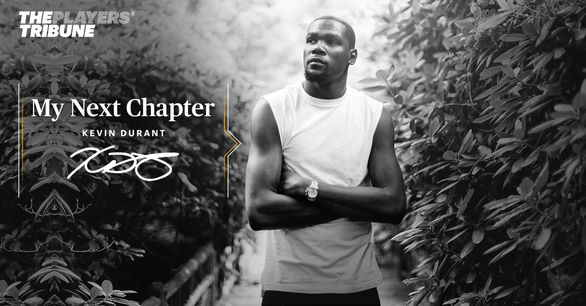

Disclaimer: This page is not recommended for Thunder fans. It will either make you cry or make you really angry. Its probably better to stay away.
After a lackluster season the previous year, George went into free agency coming of a 6 games series loss to the Utah Jazz lead by a rookie and everyone saw the line in the sand: Paul George was leaving Oklahoma City after his one year rental to go play in his hometown team, the Los Angeles Lakers. Well, everyone was wrong. "Unfinished business" said George. He was there to stay. The Thunder now had a duo of George and Russ for the next couple of years and there was hope. And that hope grew by the way Paul played. Specially from December foward. And so begun the MVPG campaing, headlined by George´s insane game winning bucket against the Jazz.
But post all star break, he slowed down, felt some pain. And it got worse. Right as the playoffs came around George had a hurt shoulder. He even said that a few days before Game 1 against the Blazers he couldn´t even lift it. And well, that was said, because the Thunder had a fairly easy path to the conference finals. But instead, they got to game 5, in Portland, trailing 3-1 and in game 5, this happened:
-Close your eyes Thunder fans-
I know, I know, you probably think this is too low. Well, it really might be. But to me, the Thunder were still in prime position to win a championship after the trade, and it showed when they were the 1st seed in 2013. Despite that, I still believe this is the 4th worst moment in this young franchise history. In the summer of 2012, coming of a 5 game series loss against the Miami Heat, the Oklahoma City frontoffice was put in a tough position. Their owner did not want to pay the luxury tax and, because of that, they could not offer the current 6th man of the year, James Harden, the maximum ammount he could get. The Thunder offered Harden $55.5 million over four years $4.5 million less than the max deal Harden coveted And James was not on board with that.
And so, on October 28th, 2012, the Thunder traded James Harden for guards Kevin Martin and Jeremy Lamb, two first-round picks and a second-round pick. Well, looking back, let´s just say the Thunder lost the trade.
From now on, this is going to hurt. A lot.
If you read the 5 best moments, you´ve saw the commanding 3-1 series lead the Thunder had. It didn´t go well. After getting demolished in games 3 and 4, it was expected the Warriors were going to put up a fight in game 5, at home. They did, they won. No big deal, right? Just close the series in OKC. Well things were going really well. But Klay really - and I mean really - had other plans.
Klay Thompson turned into a better version of Michael Jordan and helped the Warriors win the 4th quarter 33-18, winning the game 108-101. If you´re not a Thunder fan, just watch this highlights:
(If you are, avoid this video at any cost. It will either make you cry or punch your device).
Well, after this happened, the Warriors won game 7 and went on to the finals, where they also blew a 3-1 lead and that did not have good repercusions for the Thunder(stick around for number 1).
Remember when I said the Thunder could win a championship in spite of the Harden trade? Well, here is the prime example. Following year, the Thunder are the 1st seed in the West, 60 wins and the best offensive league in the league.
As fate would have it, the Thunder would face James Harden and the Rockets in the first round. As crazy as it sounds, James was not the biggest issue for the Thunder. Their biggest issue was Patrick Beverley, who did this:
That play cost the Thunder their second best player, Russell Westbrook, for the remaining of the playoffs and with Russ gone, so were their championship dreams. This hurts because there is not a thing that can be said that will make me change my mind that in that year, 2013, the Thunder were going to be champions and that would probably have avoided:
Well, my face is now all covered in tears, so we might as well wrap it up with the absolute worst moment in Thunder history. I should honestly have this entire part listed as a Disclaimer.
The simple and easiest way to describe it? "The weakest move I have ever seem by a superstar", said Stephen A. Smith. Up 3-1 on a 73-9 team, that needed Klay Thompson to explode for a comeback. Kevin Durant choke. There´s no other way to say it. He wasn´t the best player in that playoff run(its arguable, but not for me, debate a wall) and when the Thunder needed him the most, he didn´t show up.
But at least he had seem they could get there right? Specially after they traded Serge Ibaka for Victor Oladipo and Domantas Sabonis right? Even Al Horford said he would go to OKC if Kevin stayed. Where would he go to? There was absolutely no reason to leave, right? Right? RIGHT?!
Wrong! Kevin Durant decided to join the Golden State Warriors. He left behind a legion of fans that had seem him grow heart broken, for some championships that nobody respects. He decided to make the weakest move in history.
And we, Thunder fans, were the ones left heart broken. The type of thing that every Thunder fan will forever remember where they were when it happened. You really can´t make a heart break much worse than this, to be honest.
In the end, Thunder fans were left wondering what could have been. What if the Harden trade never happened. What if OKC wasn´t cursed by injury. What if Kevin had decide to stay. Those are the question we will forever ask ourselves and be sad or angry about, but we will never know the answer.
Other Thunder central content:
Thunder´s salary cap situationTop 5 best moments in Thunder history